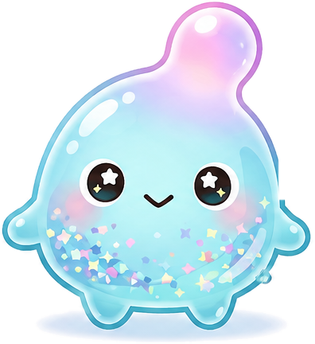
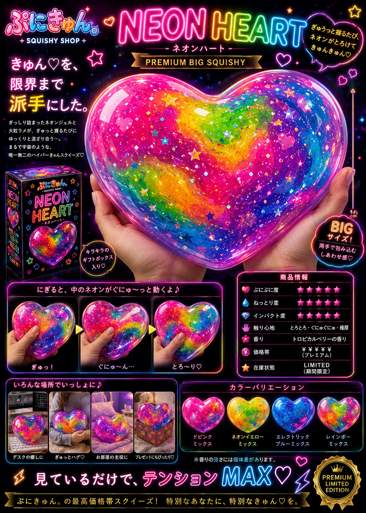

01 / NEW PUNI
新入りぷに、
きたよ♡
今いちばん触ってほしい
できたての「きゅん」。
02 / CLEAR COLLECTION
透ける。きらめく。
むにゅっとする。
水と光を閉じ込めた、
ラムネ色のコレクション。
CLEAR / NEWAURORA
AURORA
DROP
光を、ぎゅっと閉じ込めた。
透明度★★★★★
♡✦
03 / PUNI DIAGNOSIS
どのぷにが、
あなたを待ってる？
4つの質問に答えるだけ。
あなたにぴったりの「運命ぷに」を見つけます♡
04 / JAPANESE & RETRO
なつかしくて、
新しいきゅん。
和菓子と喫茶店。
やさしい色、しあわせな手触り。
05 / SPECIAL DROP
NEON
HEART
TOO MUCH KAWAII.きゅん♡を、限界まで派手にした。
- BIG
- LIMITED
- ￥￥￥￥￥
- RARE ★★★★★

06 / RARE & SOLD OUT
見つけたら、
運命かも。
売り切れも、再入荷も、
宝探しみたいに楽しんで。
SOLD OUTでも
また会えるかも♡
また会えるかも♡
07 / ABOUT PUNIKYUN
見ても、触っても、
きゅん♡とする。
かわいいを、
ぎゅっとしよう。
ぎゅっとしよう。
見るだけでも楽しい。
触ったらもっと楽しい。
そんな「きゅん♡」を集めたスクイーズショップ。